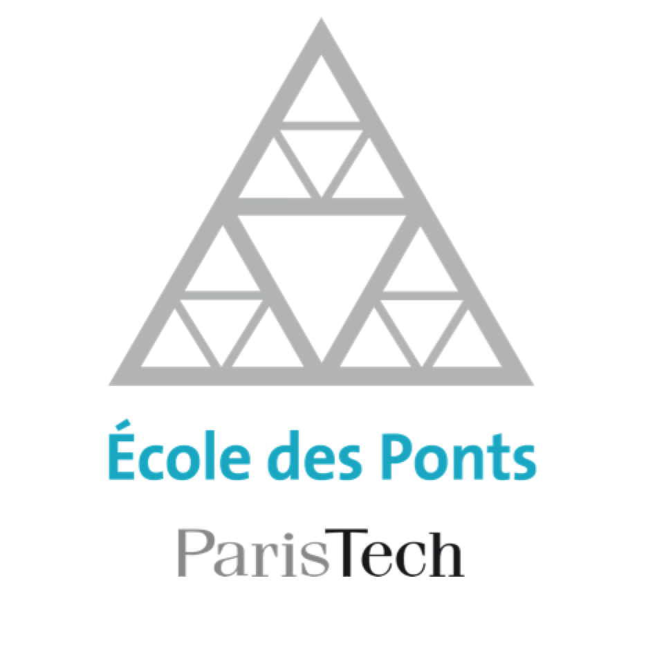
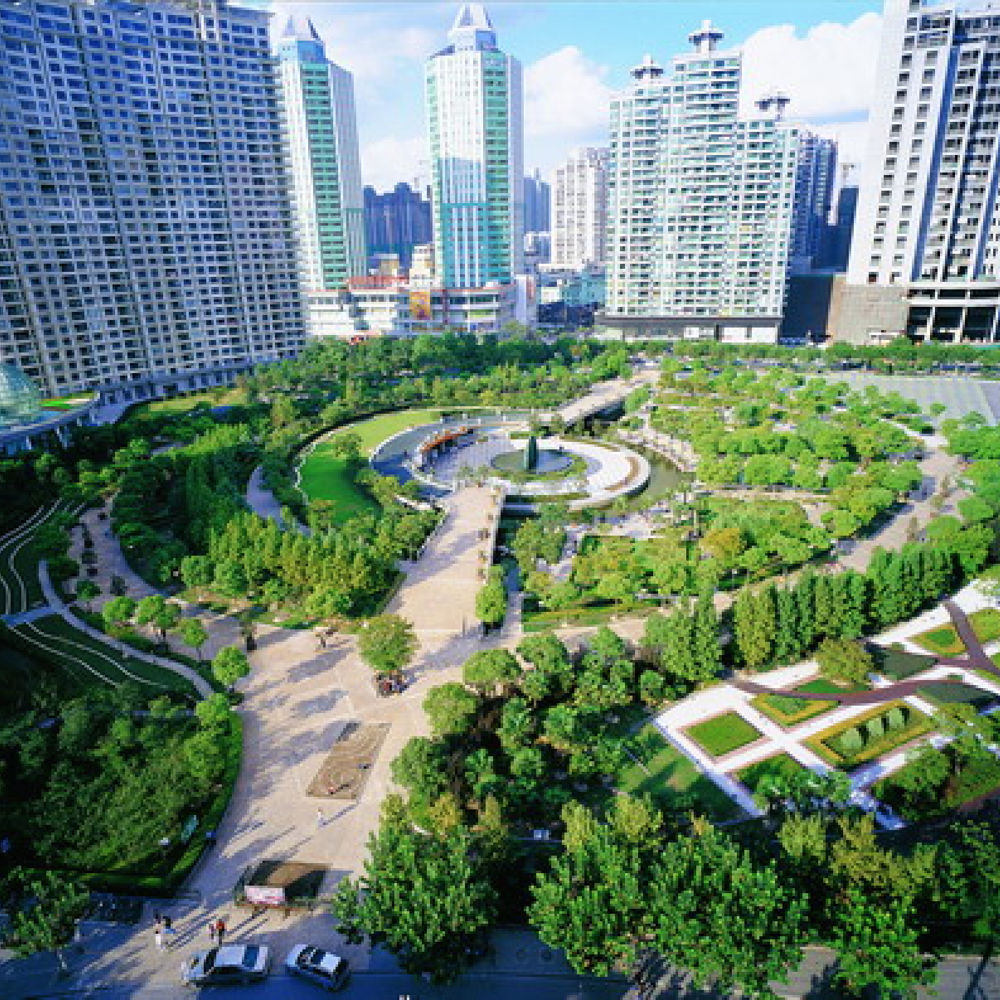

Education
-

I graduated in sciences with "Highest Honors", after a specialization in mathematics. At this point in time I strongly hesitated between medicine and engineering, but I decided to study the latter with the hope to later investigate medical problems.
-
After high school, I decided to go to "preparatory classes", where I majored in mathematics and physics, and took a minor in chemistry. This intensive program is a French specialty that prepares student for the national exams allowing entrance to the so called "Grandes Ecoles". This was also the opportunity for me to run my first research projects: I tested the efficacy of an ultrasonic cleaner by comparing the absorbance of the cleaning waters, and I investigated how the car tires tread minimises the noise generated while driving.
-

I got admission into Ecole Nationale des Ponts et Chaussées, where I later joined the department of Mechanical Sciences and Engineering, with the intention to study biomechanics. As projects, I modeled the human musculoskeletal system in order to predict the limits of sport performance, I designed a biomimetic airing system mimicking the behavior of pine cones. I also designed a video game based on Pokemon, I designed and manufactured a tennis racket and a snowboard, and I investigated the ecological impact of three different hand dryer technologies. Finally I register for extra biomechanics classes at ENSAM.
-

In Shanghai, I joined a laboratory affiliated to the College of Environmental Science and Engineering of Tongji University, where I optimized anaerobic solid digestion modules used in solid waste treatment.
-
I worked in the Harvard Occupational Biomechanics and Ergonomics laboratory to help understand and reduce musculoskeletal disorders generated by work postures.
-
I joined the Cambridge Insect Biomechanics Workgroup and compared different biological adhesive mechanism using finite element analysis.
-
I worked in the MIT Center for Ocean Engineering and used computational fluid dynamics to model the mechanical response of a moving blow-out preventer under external flow forces.
-
2014-2015
Cambridge University, M.Phil.
I joined the Department of Engineering at Cambridge University and investigated the mechanical properties of Dictyostelium Discoideum fruiting bodies.
-
2015-2021
Harvard University, PhD.
I am currently a PhD student in Harvard Medical School's Systems Biology program. I focus on big data, applied to medical problems.
-
Time
will
tell

Emergency Medicine
As mentioned in the timeline, I have always been extremely interested in medicine. While I became an engineer, I do want to be able to react adequately if someone around me is in danger.
This is the reason why I intend to get CPR/AED certified, and hope that I will later be able to join CrimsonEMS to receive further training.
Finally, I hope that my PhD. will allow me to get clinical exposure and to shadow physicians, in order to better understand the clinical needs.